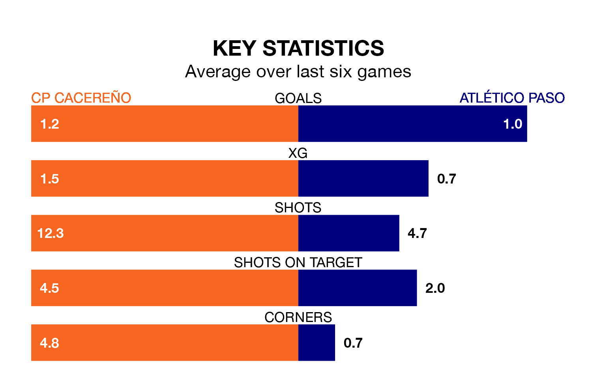

CP Cacereño host Atlético Paso on Sunday at the Estadio Príncipe Felipe in the Segunda División RFEF Group 5.
In their last league match, on April 14, CP Cacereño drew with Llerenense 0-0 away.
Atlético Paso won, 1-0 at home against Talavera CF, with Dan Ojog scoring their goals.
With 24 goals in 31 games so far this season, Atlético Paso are the league's lowest scorers with 0.8 goals per game. But they are conceding fewer than average too, letting in 18 goals at a rate of 0.6 per game.
CP Cacereño, meanwhile, are above average scorers, with 1.2 goals per game, compared to a league average of 1.1. They have also conceded 1.2 goals per game.
The visitors are fourth in the table after 31 games, of which they have won 13 and drawn 11, earning 50 points.
The home side are six places behind Atlético Paso in 10th, with 10 wins and 12 draws putting them on 42 points.
In the last three years, CP Cacereño and Atlético Paso have played each other on three occasions. They won one each, and they drew once.
Their last meeting was on December 10, when they played out a 0-0 draw.
CP Cacereño are in mixed form in the Segunda División RFEF Group 5, with two wins and two draws from their last six games.
With three wins and a draw over that period, Atlético Paso's form is slightly better – they have taken 10 points from 18, compared to CP Cacereño's eight.
Updated: 11:31 (UTC), 15/04/24